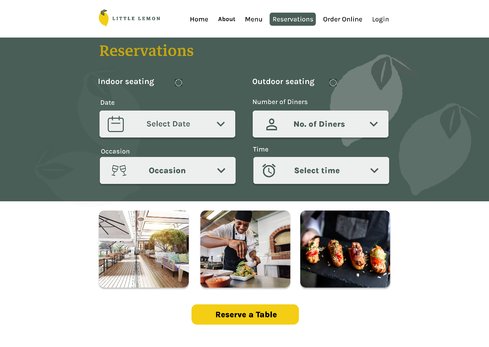
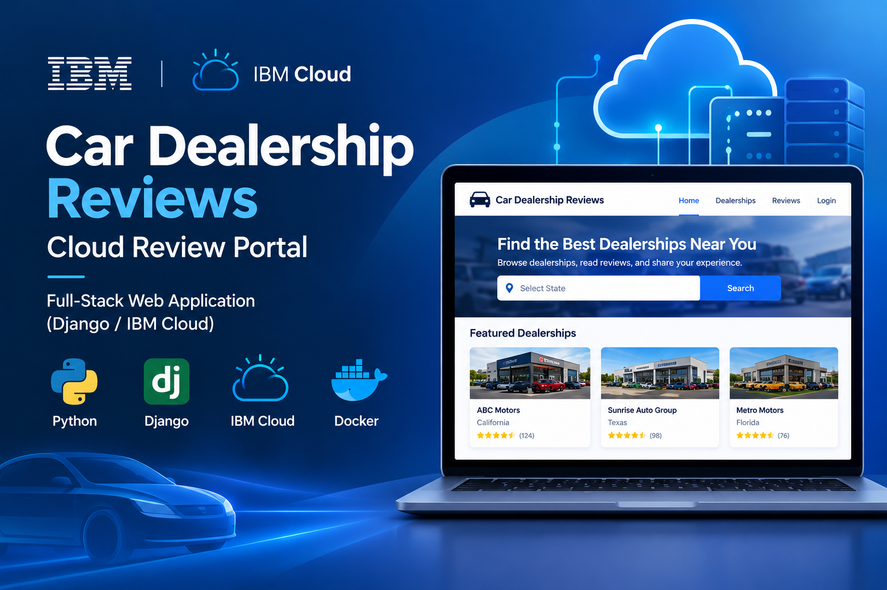
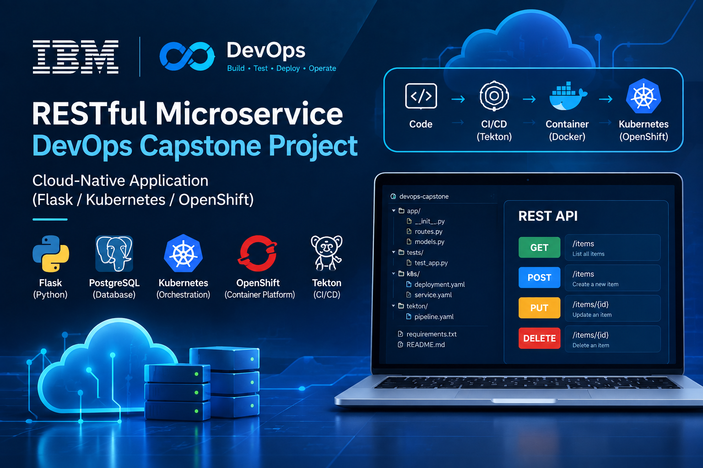
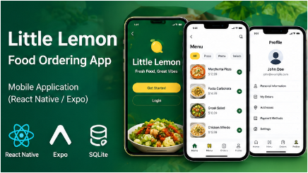
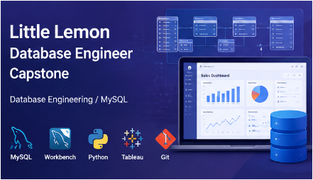

The projects showcased here represent a selection of my work across full-stack development, mobile applications, databases, and cloud-based technologies. I have worked on additional projects through various platforms and development environments, and this portfolio will be expanded and updated with more of my work in the future.
سلسلہ عالیہ سیفیہ کے خلفاء – Record Management & Search Engine
A high-performance offline Android application built to store, filter, and instantly retrieve over 48,801 historical certification records across 16 detailed fields, including names, genealogical details, location data, and lineage parameters (کیفیتِ خلافت). Engineered with SQLite for instant indexing and optimized for seamless Urdu localization, the app was deployed in two distinct release builds: a Full Edition featuring embedded high-resolution archive document scans, and a ultra-compressed Lite Edition bundled with a companion reference PDF for fast distribution via low-bandwidth channels.

Little Lemon – Restaurant Reservation App
A responsive React-based restaurant web application developed as the capstone project for Meta's Front-End Developer Professional Certificate. The project demonstrates component-based development, responsive UI, table booking, form validation, API integration, testing, accessibility, and UX-focused development.

Car Dealership Reviews – Cloud Review Portal
A full-stack car dealership review portal developed as the capstone project for the IBM Full Stack Software Developer Professional Certificate. Built with Django and IBM Cloud services, the application provides dealership browsing, state-based filtering, user authentication, dealership reviews, and review submission. The project also integrates cloud functions, Django models and proxy services, dynamic templates, CI/CD workflows, and containerization for cloud deployment.

RESTful Microservice – DevOps Capstone Project
A cloud-native RESTful microservice developed as the capstone project for the IBM DevOps and Software Engineering Professional Certificate. Built with Flask and PostgreSQL, the project applies Test-Driven Development, REST API development, automated testing, CI/CD, containerization, Kubernetes, OpenShift, and Tekton for automated cloud deployment.

Little Lemon – React Native Food Ordering App
A cross-platform mobile application developed as the capstone project for the Meta React Native Specialization. Built with React Native, the application demonstrates responsive UI design, user onboarding, navigation, profile management, remote data access, data persistence, and food menu filtering. The project applies reusable React components, Git/GitHub version control, and mobile UX/UI principles.

Little Lemon – Database Engineering Capstone
A database engineering project developed as the capstone for the Meta Database Engineer Professional Certificate. The project builds a MySQL database solution for Little Lemon, including database design and modeling, sales reporting, a table-booking system, optimized SQL queries and stored procedures, data analytics and visualization, and a Python database client. The project also applies Git, MySQL Workbench, Tableau, and database development practices.